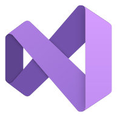

Cel
Budujemy automatyczną platformę krypto
A po drodze uczymy się
czego używać
jakich narzędzi
jakich technologii
Privoty
HomeWykresPivotyBookmapaTradingNewsDeep TestBot
 BTCUSDT1hdane z giełdy
BTCUSDT1hdane z giełdyJa już to zrobiłem
Privoty
Samodzielna platforma, która działa — i to na wysokim poziomie.
100%własny wykres
1000+symboli w skanerze
3giełdy
- News + ocena AI
- Pivoty i Golden Zone
- Bookmapa · footprint
- Deep Test strategii
- Bot Hyperliquid
- Alerty na Telegram
- Replay + PnL na żywo
- Złote strzały 7D
- Taśma transakcji MEXC
- Własne wskaźniki
01 · Wybór AI
Stawiamy na dwie: Codex i Claude
Codex
OpenAI
20 $ / mies.
> dodaj formularz zamówienia
• Edytuję index.html +42
✓ Zrobione — sprawdź formularz.
>
- ChatGPT w cenie — czat, który nie zżera limitów
- Codex do ciężkiej pracy w kodzie
- Odnawianie limitów — czasem dostajesz reset w Codexie

Claude Code
Anthropic
20 $ / mies.
> zrób stronę z menu pizzerii
● Tworzę index.html i style.css…
● Gotowe. Otwórz w przeglądarce.
>
- Naprawdę dużo potrafi i jest mądry
- Lepszy do ciężkich zadań — lepiej się sprawdza
- Brak zwykłego czatu bez limitu — każde pytanie zjada tokeny
Odpuszczamy
DeepSeek
Kimi
 Gemini — tylko do zdjęć i filmów. Tu robi dobrą robotę, część za darmo.
Gemini — tylko do zdjęć i filmów. Tu robi dobrą robotę, część za darmo.
01 · Dla tych, co na poważnie
Azure od Microsoftu — AI po API
Jedno konto, dostęp do każdego dostępnego modelu — płacisz tylko za tokeny.
Ty
Twój program
strona, bot, aplikacja
zapytanie API
Microsoft
Azure
API klasy firmowej
wybierasz
Każdy model


Bez subskrypcji na model
Nie kupujesz osobnego abonamentu u każdej firmy, jak ChatGPT Plus czy Claude Pro.
Płacisz za tokeny
Tylko za to, co faktycznie zużyjesz. Nie używasz — nie płacisz.
API najwyższej klasy
Dla firm: umowa i faktura z Microsoftu, stabilność, wybór regionu danych.
02 · Narzędzia
Jeden edytor, AI w panelu obok
 Plik · Edycja · Widok · Terminalmoj-projekt — Visual Studio Code
Plik · Edycja · Widok · Terminalmoj-projekt — Visual Studio CodeEksplorator
▾ moj-projekt
package.json
server.js
▸ public
const express = require('express');
const app = express();
app.get('/', (req, res) => {
res.send('Cześć, klub!');
});
app.listen(3000);
// serwer działa
Claude Code / Codex
Zrób serwer, który wita gości klubu.
Utworzyłem server.js. Uruchom: npm start
Dodaj stronę z listą zajęć.
Node.jsUTF-8JavaScript
- Visual Studio CodeDarmowy edytor. Tu otwieramy folder projektu.
- Rozszerzenie AIClaude Code lub Codex — w panelu obok kodu. Widzi pliki, pisze i poprawia.
 Node.js (wersja LTS)Uruchamia nasze projekty.
Node.js (wersja LTS)Uruchamia nasze projekty.
Visual Studio CommunityTylko do C# WinForms — to inny program niż VS Code.
03 · Node.js
Jeden język, prawie wszystko
Node.js
+ 2 mln paczek npm
Strony internetowe
Front i backend w tym samym języku.
html · css · js
Serwery i API
Logowanie, baza danych, płatności.
express
Aplikacja na komputer
Aplikacja z przeglądarki działa tak samo jak zwykły program — tak zrobiono VS Code.
electron
Boty i automaty
Discord, Telegram — skrypty, które robią robotę za ciebie.
npm start
Działa na
Windows
Linux
macOS
telefonie — przez przeglądarkę
05 · Jak zacząć
Pierwszy projekt w 5 krokach
1
ChatGPT
Opisz pomysł
Co chcesz zrobić i po co — zwykłymi słowami.
2
ChatGPT
Porozmawiaj
Doprecyzujcie cele i zakres technologii.
3
ChatGPT
Pisze prompt
Gdy plan jest jasny — gotowe polecenie dla Claude'a.
4
Claude CodeCała robota
Wklejasz prompt w VS Code — Claude robi najtrudniejszą pracę.
5
Codex
Poprawki
Drobne zmiany i dopieszczanie.
Pierwsza wiadomość do ChatGPT:
„Chcę zrobić stronę z planem zajęć naszego klubu. Dopytaj mnie o szczegóły, a potem napisz prompt dla Claude'a.”
Podsumowanie · czego i jak używać
Najprostszy i wydajny sposób pracy z AI
Czego używać
Claude + Codex
po 20 $ miesięcznie
VS Code
darmowy, AI obok kodu
Node.js
npm install i działa
Skille
zapytaj: „masz skill?”
Jak używać
ChatGPT
rozmowa, plan, prompt
→
Claude Code
najtrudniejsza praca
→
Codex
poprawki
Małe kroki
Sprawdzaj sam
Błąd? Wklej go AI
06 · Czego użyjemy
Backend i frontend — z czego zbudujemy
Źródło danych
API giełd
Świece i ceny za darmo, bez konta.
dokumentacja API ↗
REST
WebSocket
WebSocket
Backend
Node.jsPobiera świece, zapisuje je u siebie, liczy wskaźniki i testy.
// serwer: świece dla wykresu app.get('/api/swiece', async (req, res) => { const swiece = await pobierz('BTCUSDT'); res.json(swiece); });
- Świece trzymane na dysku
- Na żywo przez WebSocket
WebSocket
Frontend
Wykres na canvas
TypeScript rysuje
 Rust → WASM liczy
Rust → WASM liczy
- Najpierw najnowsze świece
- Rysuje tylko to, co widać
- Ciężkie liczenie osobno
06 · Zobaczcie na żywo
BTC na żywo — prosto z giełdy
// 1. Historia: ostatnie 90 świec BTC (1 minuta) const url = 'https://api.binance.com/api/v3/klines' + '?symbol=BTCUSDT&interval=1m&limit=90'; const dane = await (await fetch(url)).json(); const swiece = dane.map(k => ({ t: k[0], o: +k[1], h: +k[2], l: +k[3], c: +k[4] })); rysuj(swiece); // 2. Na żywo: giełda sama wysyła każdą zmianę const ws = new WebSocket( 'wss://stream.binance.com:9443/ws/btcusdt@kline_1m'); ws.onmessage = (e) => { aktualizuj(swiece, JSON.parse(e.data).k); rysuj(swiece); // canvas: tylko to, co widać };
BTCUSDT1m
 Binance
—
Binance
—
łączenie z giełdą…
Koniec lekcji 1
Pytania?
Na lekcję 2 — start platformy — zainstaluj